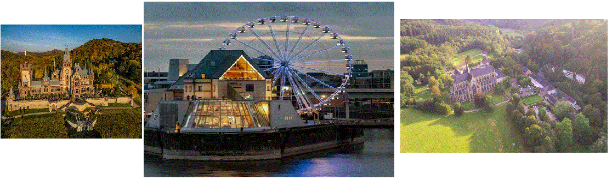

Homes like these can be seen in many parts of
Germany.
Sometimes more than 1 family may live there, you can tell this by a label near the buzzer; each buzzer has a
lastname if more than 1 family reside there.

Cathedrals like this one are found throughout Germany. Some castles also have
knight reenactments with jousting and falconry and more.
Many other structures worth visiting are:
Cathedrals 1
Altenberger Dom (*above right*) 1.1
Kolner Dom 1.2
Wormser Dom 1.3
Castles 2
Drachenburg (*above left*)2.1
2.2
Neuschwanstein 2.3
Others 3
Museums (*above center*) 3.1
Statues 3.2
Historical Sites 3.3
This is Currywurst a german bratwurst spiced with curry and served with
curryketchup. One of the many unique and delicious dishes Germany is known for.

 Homes like these can be seen in many parts of
Germany.
Sometimes more than 1 family may live there, you can tell this by a label near the buzzer; each buzzer has a
lastname if more than 1 family reside there.
Homes like these can be seen in many parts of
Germany.
Sometimes more than 1 family may live there, you can tell this by a label near the buzzer; each buzzer has a
lastname if more than 1 family reside there.